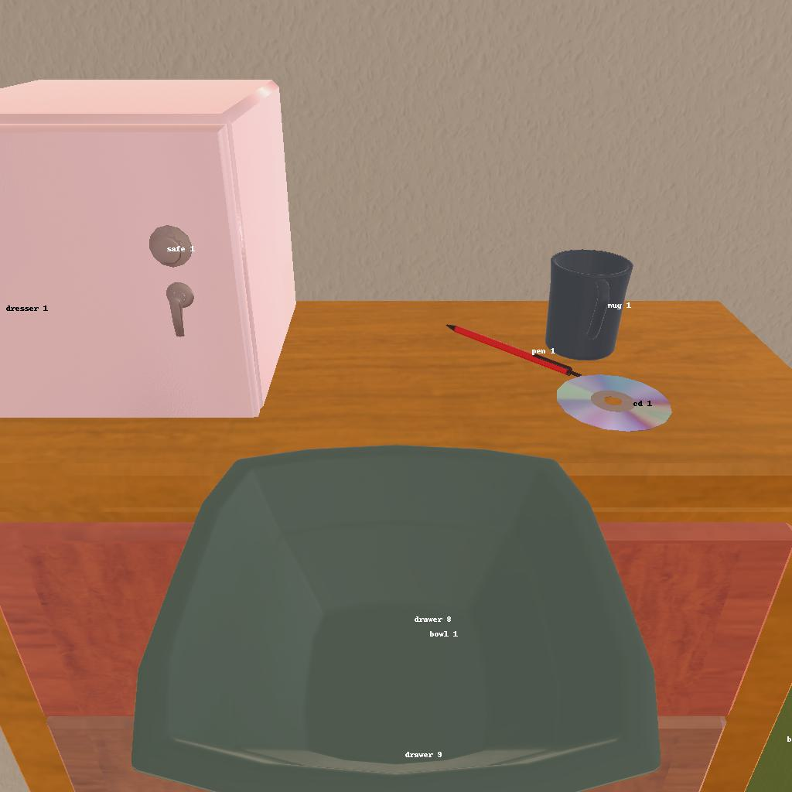

---------------------------------------------------------task: 6---------------------------------------------------------
--------------------------------------------------------------------------------------------------------------------------------------------------------------------
--------------------------------------------------------------------------------------------------------------------------------------------------------------------
Step:--------------------------------------------------------------------------12-------------------------------------------------------------------------------
----------------------------------------
VLM Prompt:
Image1:
Image2:
Image3:
**Instruction**
1. Analyze the provided image to identify all visible household objects, focusing on those relevant to the task description "put some cd on safe."
2. Use the analysis of the image and the task hint "The agent must find an object of the desired type, pick it up, find the correct location to place it, and put it down there." to answer the question: what is the most reasonable action in the choices for the task description "put some cd on safe"?
4. Decide and write the answer using the template: The answer is: (i): , where i is the real number. If there is no desired object in the image, search every place based on **Initial Observation** to find the object. And if no one is exactly correct, choose a similar answer.
**Initial Observation**
You are in the middle of a room. Looking quickly around you, you can see bed (1-2), dresser (1), sidetable (1-2), drawer (1-11), desk (1), garbagecan (1), safe (1)
**Answer Choices**
(1): go to bed 1
(2): go to bed 2
(3): go to sidetable 1
(4): go to drawer 1
(5): go to drawer 2
(6): go to sidetable 2
(7): go to drawer 3
(8): go to drawer 4
(9): go to desk 1
(10): go to garbagecan 1
(11): go to drawer 5
(12): go to drawer 6
(13): go to drawer 7
(14): go to drawer 9
(15): go to drawer 10
(16): go to drawer 11
(17): go to safe 1
(18): put bowl 1 in/on dresser 1
(19): examine bowl 1
(20): examine dresser 1
**Answer**
Let's think step by step by following the instructions.
----------------------------------------
----------------------------------------
Original Response:
First, we identify all visible household objects relevant to the task "put some cd on safe." In the images provided, we can see a safe (safe 1), a dresser (dresser 1), a bowl (bowl 1), and some other objects like a pen and a mug that are not relevant to the task. There is no visible CD in the images.
Considering the task hint, we need to find an object of the desired type, which is a CD in this case. Since no CD is visible in the images, we must search other places based on the Initial Observation.
The Initial Observation lists various objects and furniture in the room, including drawers and a desk, which are common places where CDs might be stored. Therefore, the most reasonable action would be to search the drawers or the desk.
The answer is: (4): go to drawer 1. If the CD is not found there, the agent can continue searching the subsequent drawers or the desk as those are also common places to find CDs.
----------------------------------------
----------------------------------------
>>> Refine Original VLM Response and Get Pure Action: go to drawer 1
----------------------------------------
-----------------------------------------------------------------
Running time: 11.953564882278442 seconds
Total Money: 3.4253999999999993
-----------------------------------------------------------------
-----------------------------------------------------------------
Text Observation:You arrive at loc 4. The drawer 1 is open. On the drawer 1, you see a pillow 1, a cellphone 1, a cellphone 2, a creditcard 1, and a pencil 1.
-----------------------------------------------------------------
UNSUCCEED